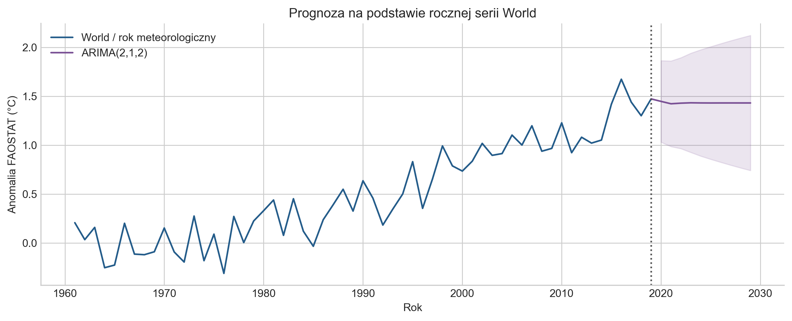
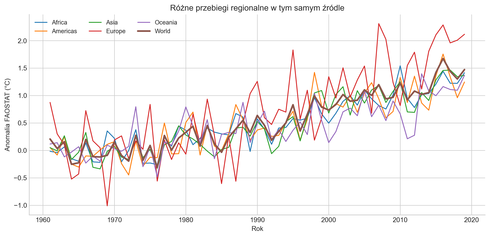

Wynik w skrócie. W teście ERA5 na latach 2020–2024 ARIMA nie pokonała prostych metod: jej średni błąd bezwzględny wyniósł 0.160°C, wobec 0.141°C dla modelu drift. W 2024 r. zaniżyła anomalię o 0.368°C. To wynik jednego pięcioletniego testu, a nie dowód, że ARIMA zawsze przegrywa.
Prognoza kontra rzeczywistość: czy ARIMA pokonała prosty trend?
Prognoza FAOSTAT wobec obserwacji 2020–2025 i osobny test modeli na ERA5
Punktem wyjścia jest analiza temperatury nad lądami w FAOSTAT. Notebook konstruuje kompletny roczny szereg World / Temperature change / Meteorological year z lat 1961–2019, bez imputacji, i wyznacza prognozę ARIMA(2,1,2) na lata 2020–2029.
Ten raport prowadzi dwa eksperymenty. Najpierw zestawiamy prognozę z poprawnej serii FAOSTAT z obserwacjami 2020–2025 z nowego wydania tego samego źródła, kontrolując rewizje historii. Następnie pytamy, czy ARIMA daje przewagę nad prostymi metodami w osobnym teście ERA5 2020–2024. Ocena na ERA5 dotyczy ponownie dopasowanego modelu.
2019 to koniec treningu, nie potwierdzona data prognozy. Notebook ma datę 29 września 2024 r., a jego konstrukcję szeregu poprawiono później. Odtwarzamy prognozę z zachowanego pliku kończącego się w 2019 r.; nie jest to udokumentowana prognoza opublikowana w 2019 r.
Punkt wyjścia: roczna seria FAOSTAT World
Notebook bazowy wykorzystuje jeden gotowy agregat źródłowy. Każdy rok ma jedną obserwację; nie uśredniamy krajów, regionów, miesięcy ani sezonów. Ten sam szereg służy w notebooku do opisu historii i estymacji ARIMA. Poniżej odtwarzamy tę specyfikację na tym samym lokalnym pliku.
Prognoza FAOSTAT na 2020 r. wynosi 1.447°C, a na 2029 r. 1.431°C. Po krótkich wahaniach model zbliża się do stałego poziomu. Poprawnie zdefiniowany szereg nie nadaje ARIMA bez drift mechanizmu trwałego wzrostu.

Sześć nowych lat FAOSTAT: prognoza spotyka obserwacje
FAO opublikowało dane 1961–2025 1 kwietnia 2026 r. Pobraliśmy pełny pakiet 22 września 2026 r. W obu plikach wybieramy World / Meteorological year / Temperature change: zgadzają się kody obszaru (5000), okresu (7020) i elementu (7271). Nowy szereg zawiera 65 kolejnych lat, bez braków ani powtórzeń; jednostką jest °C.
Publikacje FAO opisują tę samą zmienną: anomalię temperatury powietrza nad lądami względem 1951–1980, opartą na GISTEMP. Zgodność definicji i kodów pozwala na porównanie między wydaniami, lecz nie dowodzi identyczności wszystkich szczegółów algorytmu. Nie dysponujemy pełnym rejestrem zmian metodologii między tymi wydaniami. Wyniki oceniamy względem najnowszych oszacowań, z jawnym zastrzeżeniem rewizji.
W historii 1961–2019 zmieniło się 58 z 59 wartości. Średnia rewizja wynosi -0.002°C, a największa bezwzględna zmiana 0.069°C. Rok 2019 zmienił się z 1,473°C na 1,430°C. Zachowujemy trening ze starego pliku; nie przeliczamy prognozy na zrewidowanej historii.
| Rok | Prognoza | Obserwacja | Błąd |
|---|---|---|---|
| 2020 | 1.447 | 1.664 | -0.217 |
| 2021 | 1.423 | 1.474 | -0.051 |
| 2022 | 1.429 | 1.381 | 0.048 |
| 2023 | 1.433 | 1.770 | -0.337 |
| 2024 | 1.432 | 2.107 | -0.675 |
| 2025 | 1.431 | 1.879 | -0.448 |
MAE wynosi 0.296°C, RMSE 0.370°C, a bias -0.280°C. Model zaniża pięć z sześciu obserwacji. Największy błąd przypada na 2024 r.: prognoza 1,432°C wobec 2,107°C. Przedział predykcji 95% obejmuje 5 z 6 obserwacji; poza nim znajduje się 2024 r. Sześć lat nie wystarcza do oceny długookresowej kalibracji.
To ocena odtworzonej, poprawionej prognozy FAOSTAT. Nie dowodzi jeszcze przewagi nad benchmarkami na FAOSTAT. Osobny eksperyment poniżej porównuje metody na ERA5.
Audyt można odtworzyć za pomocą faostat_vintage_audit.py. Udostępniamy rewizje rok po roku, prognozy i obserwacje oraz adres pobrania, sumy kontrolne i wyniki kontroli.
Co przenosimy z notebooka do testu ERA5?
Przenosimy specyfikację ARIMA(2,1,2) bez drift i koniec treningu w 2019 r., a nie wyestymowane parametry ani wartości prognozy. Model uczymy ponownie na szeregu ERA5 1940–2019. To dłuższa historia i inna zmienna niż FAOSTAT 1961–2019, dlatego wynik nie izoluje wpływu zmiany źródła.
FAOSTAT opisuje temperaturę powietrza nad lądami, a użyty szereg ERA5 — globalną średnią nad lądami i oceanami względem 1850–1900. Różnią się również definicje okresu rocznego i skali odniesienia. Nie odejmujemy prognozy FAOSTAT od obserwacji ERA5 i nie nazywamy takiej różnicy błędem prognozy.
Test ERA5 odpowiada na odrębne pytanie o użyteczność tej samej klasy modelu. Nie zastępuje powyższego porównania prognozy z nowymi obserwacjami FAOSTAT.
Pięć lat, których model nie dostaje
W poprawionym eksperymencie wszystkie metody korzystają wyłącznie z rocznych wartości ERA5 z lat 1940–2019. Jednorazowo prognozują lata 2020–2024, bez aktualizacji po każdym kolejnym roku. Poniższa ARIMA jest ponownie dopasowana do ERA5; nie jest prognozą FAOSTAT z notebooka.

Czy bardziej złożony model wniósł wartość?
Wszystkie modele korzystają wyłącznie z danych do 2019 r. Lata 2020–2024 służą tylko do oceny prognoz. Dla ARIMA zachowujemy konfigurację (2,1,2) zastosowaną w notebooku bazowym, zamiast wybierać jej parametry na podstawie wyników z okresu testowego.
| Metoda | Co przedłuża poza 2019 r.? |
|---|---|
| Naive | Ostatnią zaobserwowaną wartość: każdy kolejny rok równy 2019. |
| Drift | Ostatnią wartość plus średni roczny przyrost między pierwszym i ostatnim rokiem treningu. |
| Trend liniowy | Prostą dopasowaną metodą najmniejszych kwadratów do wszystkich 80 lat treningu. |
| ARIMA(2,1,2) | Dynamikę szeregu po jednokrotnym różnicowaniu, bez deterministycznego trendu. |
| Model | MAE | RMSE | Bias |
|---|---|---|---|
| Drift | 0.141 | 0.160 | -0.024 |
| Naive | 0.155 | 0.184 | -0.065 |
| ARIMA(2,1,2) | 0.160 | 0.205 | -0.113 |
| Trend liniowy | 0.298 | 0.338 | -0.298 |
MAE opisuje przeciętną wielkość pomyłki; RMSE mocniej uwzględnia duże błędy. Bias to średnia z prognoza − obserwacja: wynik ujemny oznacza zaniżanie. Błędy przeciwnych znaków mogą się w bias znosić, dlatego nie zastępuje on MAE.
Drift wygrywa zarówno według MAE, jak i RMSE. ARIMA przegrywa też z utrzymaniem ostatniej wartości. Regresja liniowa na całym okresie 1940–2019 wypada najsłabiej. Nie oznacza to, że każdy model trendu jest zły: wynik dotyczy właśnie takiego okna treningowego i takiej definicji trendu. Pięć obserwacji nie wystarcza do ustalenia trwałej przewagi ani jej istotności statystycznej.
Gdzie model pomylił się najbardziej?
| Rok | Prognoza | Obserwacja | Błąd | |Błąd| |
|---|---|---|---|---|
| 2020 | 1.247 | 1.310 | -0.063 | 0.063 |
| 2021 | 1.225 | 1.155 | 0.070 | 0.070 |
| 2022 | 1.229 | 1.181 | 0.048 | 0.048 |
| 2023 | 1.231 | 1.482 | -0.251 | 0.251 |
| 2024 | 1.231 | 1.599 | -0.368 | 0.368 |
Największe niedoszacowania przypadają na 2023 i 2024 r. W 2021 i 2022 r. model nieco zawyżał wartości, więc średni błąd ze znakiem łagodzi obraz pomyłek. Szczególnie wyraźnie widać to przy porównaniu bias z RMSE.
Modelowy przedział predykcji 95% objął 4 z 5 obserwacji. Wartość z 2024 r. (1.599°C) przekroczyła jego górną granicę (1.557°C). Pokrycie 4/5 w tak małej próbie nie jest wiarygodną oceną długookresowej kalibracji przedziałów.
Ten test pokazuje kiedy i o ile model się pomylił. Nie identyfikuje przyczyn fizycznych tych błędów. ARIMA jest klasycznym modelem statystycznym: korzysta z przeszłości jednego szeregu, a nie z emisji, wymuszeń radiacyjnych czy stanu oceanów. Nie zastępuje modelu klimatu ani analizy przyczynowej.
Czego uczy powrót do analizy?
Notebook bazowy definiuje spójny szereg rocznej temperatury nad lądami. Porównanie z nowym FAOSTAT pokazuje niedoszacowanie późniejszego wzrostu przez odtworzoną ARIMA bez drift. W osobnym eksperymencie ARIMA(2,1,2), nauczona na ERA5 do 2019 r., nie przewidziała lat 2020–2024 lepiej od naive ani drift. To dwa wyniki dotyczące różnych szeregów. Poprawna definicja danych jest warunkiem sensownej analizy; przewagę modelu trzeba jeszcze wykazać względem prostych metod.
Kolejnym uzasadnionym krokiem byłby test z wieloma historycznymi punktami startowymi, dobranymi przed 2020 r., oraz osobne porównanie błędów dla horyzontów od roku do pięciu lat. Pozwoliłby sprawdzić, czy wynik zależy od wyjątkowo trudnego końca badanego okresu. Nie wybieramy teraz nowego modelu na podstawie tych samych pięciu lat i nie przedstawiamy tego jako niezależnej walidacji.
Kontekst: jedna liczba globalna nie opisuje regionów
W pakiecie Copernicus za 2024 r. globalna anomalia ERA5 wynosi około 1,60°C względem 1850–1900. To rekord w tym zbiorze, zgodny z raportem Copernicus Global Climate Highlights 2024. Zakres niniejszego testu pozostaje zamknięty na 2024 r.
FAOSTAT pozwala uzupełnić obraz regionalny. Poniżej wykorzystujemy wyłącznie gotowe agregaty i kategorię Meteorological year, bez imputacji. Te linie nie są obserwacjami do oceny powyższej prognozy ERA5.

Rozkład średnich obszarów i porównania grup krajów zawiera notebook bazowy. Nie są potrzebne do rozstrzygnięcia testu prognostycznego.
Metoda, ograniczenia i odtwarzalność
- Jedna wersja danych. Trening i test ERA5 pochodzą z tego samego lokalnego pakietu opublikowanego po 2024 r. Nie odtwarzamy wersji danych dostępnej w 2019 r.; możliwe rewizje historyczne nie są tu badane. Jest to retrospektywny holdout, nie test real-time.
- Jednostka analizy. Jedna roczna globalna anomalia ERA5, 85 kolejnych obserwacji 1940–2024. Braki oznaczone
-999są odrzucane; ciągłość lat jest sprawdzana. Nazwa pliku zawierawrt_1991-2020, ale jego nagłówek określa wartości względem 1850–1900 i normalizację zbiorów do wspólnej średniej 1991–2020. Nie dodajemy ponownie przesunięcia bazowego. - Brak dostrajania do testu. Wszystkie cztery metody uczą się na latach 1940–2019. ARIMA używa rzędu z notebooka bazowego. Raport przerywa obliczenia przy braku zbieżności zamiast po cichu zastępować model regresją.
- Niepewność. Przedziały pochodzą z
get_forecast, a nie ze stałego pasma reszt regresji. Nie obejmują wszystkich źródeł niepewności klimatycznej ani niepewności wyboru modelu. - Powiązanie z notebookiem. Prognoza FAOSTAT korzysta z tej samej rocznej serii World, bez imputacji, i tej samej specyfikacji ARIMA co notebook bazowy. Miary błędów FAOSTAT i ERA5 podajemy osobno, dla różnych zmiennych i okresów testowych.
Obliczenia znajdują się w temperature_backtest.py. Uruchomienie skryptu zapisuje wyniki modeli, prognozy i błędy, przedziały ARIMA, prognozę FAOSTAT z analizy bazowej oraz wersję biblioteki, diagnostykę i sumy kontrolne źródeł. Renderowanie raportu ponownie wylicza wyniki z tych samych plików wejściowych.
Źródła
- FAO: wydanie 1961–2025 — data aktualizacji, zakres i baza 1951–1980. Opis wydania 1961–2023 potwierdza definicję anomalii i źródło GISTEMP. Pełny pakiet pobrany 2026-09-22 zachowano jako
data/faostat_latest.zip; pobrany plik może zawierać rewizje wprowadzone po dacie publikacji komunikatu. - FAO: Temperature change statistics 1961–2019 — zakres danych i zmienna dotycząca temperatury powietrza nad lądami. Lokalny plik:
data/Environment_Temperature_change_E_All_Data_NOFLAG.csv, używany w oryginalnym notebooku. - Copernicus: Global Climate Highlights 2024 oraz pakiet materiałów źródłowych. Lokalny plik roczny:
data/copernicus/annual/GCH_time_series_of_annual_global_temperatures_1850-2024_wrt_1991-2020.csv.